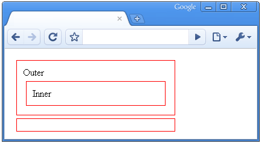
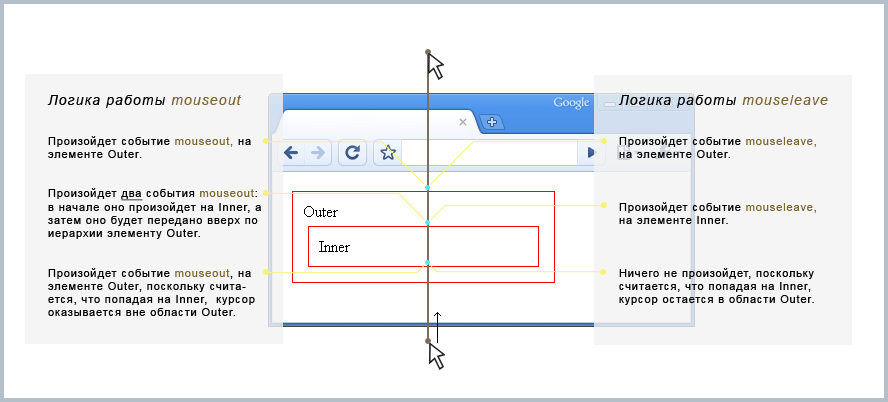

Обработчик или источник выхода курсора из элемента
Материал из JQuery
Устанавливает обработчик выхода курсора из области элемента, либо, запускает это событие. Метод имеет три варианта использования:
Устанавливает функцию handler в качестве обработчика события mouseleave, на выбранные элементы.
Метод является аналогом bind("mouseleave", handler(eventObject)).
handler(eventObject) — функция, которая будет установлена в качестве обработчика. При вызове она будет получать объект события eventObject.
Метод отличается от предыдущего возможностью передавать в обработчик дополнительные данные.
Является аналогом bind("mouseleave", eventData, handler(eventObject)).
handler(eventObject) — см. выше.
eventData — дополнительные данные, передаваемые в обработчик. Они должны быть представлены объектом в формате: {fName1:value1, fName2:value2, ...}.
Вызывает событие mouseenter, у выбранных элементов страницы. Метод является аналогом trigger("mouseleave").
Убрать установленный обработчик можно с помощью метода unbind().
Все три варианта использования метода, являются аналогами других методов (см. выше), поэтому все подробности использования mouseleave(), можно найти в описании этих методов.
Метод хорошо совместим с mouseenter(), и плохо с mouseover().
Простой пример:
// установим обработчик события mouseleave, элементу с идентификатором foo $('#foo').mouseleave(function(){ alert('Курсор мыши вышел из границ элемента "foo"'); }); // вызовем событие mouseleave на элементе foo $('#foo').mouseleave(); // установим еще один обработчик события mouseleave, на этот раз элементам // с классом block. В обработчик передадим дополнительные данные $('.block').mouseleave({a:12, b:"abc"}, function(eventObject){ var externalData = "a=" + eventObject.data.a + ", b=" + eventObject.data.b; alert('Курсор вышел из границ элемента с классом block. '+ 'В обработчик этого события переданы данные: ' + externalData ); });
Особенности метода
По своему назначению, mouseleave совпадает с событием mouseout. Однако у них имеются заметные отличия. Дело в том, что mouseout, как и многие другие стандартные события javascript, обладает свойством "всплытия" вверх по иерархии. То есть, после выполнения на элементе, событие передается родительскому элементу, потом прародительскому, и так далее, вплоть до начала дерева DOM. Эта особенность может приводить к различным проблемам. Событие mouseleave таким свойством не обладает, и выполняется только один раз, на самом элементе. Поэтому, в некоторых случаях, оно может быть гораздо удобнее. Покажем различия в поведении этих событий на примере:
<!DOCTYPE html> <html> <head> <script src="http://code.jquery.com/jquery-latest.min.js"></script> <style> div{padding:10px; margin:5px; border:1px solid red} </style> </head> <body> <div id="outer"> Outer <div id="inner"> Inner </div> </div> <div id="log"></div> <script> // какой-то javascript </script> </body> </html>
Страница будет выглядеть следующим образом:

Теперь, установим на элементы Outer и Inner по одному обработчику событий mouseleave и mouseout:
// при возникновении события mouseleave, добавим новую запись в элемент с идентификатором log $('#outer').mouseleave(function(){ $('#log').append('<div style="color:blue">Был вызван обработчик события mouseleave на элементе outer</div>'); }); $('#inner').mouseleave(function(){ $('#log').append('<div style="color:blue">Был вызван обработчик события mouseleave на элементе inner</div>'); }); // при возникновении события mouseout, добавим новую запись в элемент с идентификатором log $('#outer').mouseout(function(){ $('#log').append('<div style="color:green">Был вызван обработчик события mouseout на элементе outer</div>'); }); $('#inner').mouseout(function(){ $('#log').append('<div style="color:green">Был вызван обработчик события mouseout на элементе inner</div>'); });
Теперь, если мы проведем курсором снизу вверх по странице, события будут происходить следующим образом:

В действии
Следующий пример позволяет вам увидеть различия mouseleave и mouseout "в живую":
<!DOCTYPE html>
<html>
<head>
<script src="http://code.jquery.com/jquery-latest.min.js"></script>
<style>
div{padding:10px; margin:5px;}
#outer{background-color:#D6EDFC}
#inner{background-color:#FFCC00}
#out-mouseout, #in-mouseout{float:right}
#out-leave, #in-leave{float:left}
</style>
</head>
<body>
<div id="outer">
<p id="out-leave">mouseleave - 0</p><p id="out-mouseout">mouseout - 0</p>
<div style="clear:both" />
<div id="inner">
<p id="in-leave">mouseleave -0</p><p id="in-mouseout">mouseout - 0</p>
<div style="clear:both" />
</div>
</div>
<script>
var out_i = 0;
var in_i = 0;
$('#outer').mouseleave(function(){
out_i++;
$("#out-leave").text("mouseleave - " + out_i);
});
$('#inner').mouseleave(function(){
in_i++;
$("#in-leave").text("mouseleave - " + in_i);
});
var out_j = 0;
var in_j = 0;
$('#outer').mouseout(function(){
out_j++;
$("#out-mouseout").text("mouseout- " + out_j);
});
$('#inner').mouseout(function(){
in_j++;
$("#in-mouseout").text("mouseout- " + in_j);
});
</script>
</body>
</html>

{kind=link}
{kind=link}